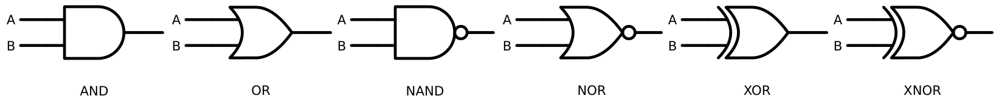
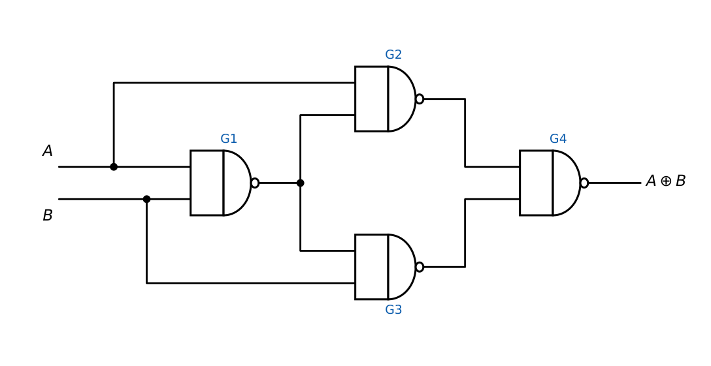

Boolean Algebra, Logic Gates and Canonical Forms
In this chapter
Algebraic simplification, De Morgan and duality, XOR/XNOR identities, universal gates, minterm/maxterm lists and conversion between SOP and POS. Almost every combinational question starts here.
3.1 Boolean algebra: postulates and laws
Boolean algebra works on \(\{0,1\}\) with AND (\(\cdot\)), OR (\(+\)) and NOT (\(\overline{\phantom{A}}\)).
| Identity: \(A+0=A\), \(A\cdot1=A\) | Null: \(A+1=1\), \(A\cdot0=0\) |
| Idempotent: \(A+A=A\), \(A\cdot A=A\) | Complement: \(A+\overline A=1\), \(A\overline A=0\) |
| Involution: \(\overline{\overline A}=A\) | Commutative, associative: as in ordinary algebra |
| Distributive: \(A(B+C)=AB+AC\) and also \(A+BC=(A+B)(A+C)\) | Absorption: \(A+AB=A\), \(A(A+B)=A\) |
| Simplification: \(A+\overline AB=A+B\), \(A(\overline A+B)=AB\) | Consensus: \(AB+\overline AC+BC=AB+\overline AC\) |
De Morgan: \(\overline{A+B}=\overline A\,\overline B\), \(\overline{AB}=\overline A+\overline B\) (extends to \(n\) variables).
Duality: interchange \(+\leftrightarrow\cdot\) and \(0\leftrightarrow1\); every identity stays valid. The dual of \(F\) is \(F^D(x_1,\dots,x_n)=\overline{F(\overline{x_1},\dots,\overline{x_n})}\).
(a) \(AB+\overline AC+BC=AB+\overline AC\) (consensus). (b) \((A+B)(A+C)=A+BC\). (c) \(A+\overline AB=A+B\).
(d) \(F=\overline A B+A\overline C\) remains in minimal form (no common factor or consensus).
(e) \(XY+X\overline Y Z+X\overline Z=X(Y+\overline YZ+\overline Z)=X(Y+Z+\overline Z)=X\).
(i) \(A+BC\ne(A+B)C\). (ii) De Morgan changes both the operator and each literal; \(\overline{AB}\ne\overline A\,\overline B\). (iii) The dual is not the complement: duality swaps operators and constants but keeps the literals as they are. (iv) \(A+\overline AB=A+B\), not \(A+\overline A B=A\).
3.2 Logic gates

| Gate | Expression | Output is 1 when |
|---|---|---|
| AND | \(AB\) | all inputs are 1 |
| OR | \(A+B\) | at least one input is 1 |
| NAND | \(\overline{AB}\) | not all inputs are 1 |
| NOR | \(\overline{A+B}\) | all inputs are 0 |
| XOR | \(A\oplus B=A\overline B+\overline AB\) | inputs differ (odd number of 1s for \(n\) inputs) |
| XNOR | \(A\odot B=AB+\overline A\overline B\) | inputs agree (even number of 1s for \(n\) inputs) |
\(A\oplus0=A\), \(A\oplus1=\overline A\), \(A\oplus A=0\), \(A\oplus\overline A=1\). Commutative and associative.
\(A\oplus B=\overline{A\odot B}\); \(\overline A\oplus B=A\oplus\overline B=A\odot B\); \(A(B\oplus C)=AB\oplus AC\).
\(A+B=A\oplus B\oplus AB\). \(A\oplus B\oplus C=\sum m(1,2,4,7)\) (odd parity).
XNOR of \(n\) inputs equals even parity.
3.2.1 Universal gates
NAND alone and NOR alone are functionally complete: any Boolean function can be built from them.
- NOT: tie inputs together, \(\overline{A\cdot A}=\overline A\).
- AND: NAND followed by NAND-as-NOT (2 NANDs). OR: invert both inputs with NANDs, then NAND (3 NANDs).
- Dually for NOR: NOT = NOR with tied inputs; OR = NOR + inverter; AND = NOR of inverted inputs.

A 2-input XOR needs 4 NAND gates (or 5 NOR gates). The sets \(\{\text{AND},\text{NOT}\}\) and \(\{\text{OR},\text{NOT}\}\) are also complete; \(\{\text{AND},\text{OR}\}\) is not (no inversion), and XOR alone is not.
3.2.2 Positive and negative logic
Taking the higher voltage as 1 (positive logic) versus as 0 (negative logic) swaps the function: a positive-logic AND is a negative-logic OR. This is the physical meaning of De Morgan and of bubble pushing.
3.3 Number of Boolean functions
There are \(2^{n}\) input combinations and each can map to 0 or 1, so
Number of Boolean functions of \(n\) variables \(=2^{2^n}\) (\(16\) for \(n=2\), \(256\) for \(n=3\), \(65\,536\) for \(n=4\)).
A function is self-dual if \(F=F^D\); number of self-dual functions \(=2^{2^{n-1}}\) (so \(16\) for \(n=3\)).
Number of functions that equal 1 on exactly \(k\) minterms: \(\binom{2^n}{k}\).
3.4 Canonical forms
A minterm \(m_i\) is an AND of all \(n\) variables (each in true or complemented form) that equals 1 on exactly row \(i\). A maxterm \(M_i\) is an OR of all \(n\) variables that equals 0 on exactly row \(i\); \(M_i=\overline{m_i}\).
Canonical SOP: \(F=\sum m(\text{rows where }F=1)\). Canonical POS: \(F=\prod M(\text{rows where }F=0)\).
\(\overline F=\sum m(\text{rows where }F=0)\) and \(\overline F=\prod M(\text{rows where }F=1)\).
If \(F=\sum m(S)\) then \(F=\prod M(\{0,\dots,2^n-1\}\setminus S)\). Row \(i\) is formed by reading \(ABC\ldots\) as a binary number (\(A\) = MSB).
Maxterm for row \(i\): variable appears uncomplemented where the bit is 0 and complemented where it is 1.
\(F=\overline AB+A\overline C\) for \((A,B,C)\). \(\overline AB=\overline AB\overline C+\overline ABC=m_2+m_3\); \(A\overline C=AB\overline C+A\overline B\overline C=m_6+m_4\). So \(F=\sum m(2,3,4,6)=\prod M(0,1,5,7)\).
\(M_5\): row \(101\) gives \(\overline A+B+\overline C\). Hence \(F=(A+B+C)(A+B+\overline C)(\overline A+B+\overline C)(\overline A+\overline B+\overline C)\).
\(F=(A+\overline B)(B+C)(\overline A+\overline C)\) is \(0\) on rows \(0,2,3,4,5,7\), so \(F=\sum m(1,6)\) and has exactly 2 minterms.
3.4.1 Functions of a given count of minterms
For \(F=(A+B)(\overline C+D)\) in four variables, \(A+B\) is true in 12 of 16 combinations of \((A,B,\cdot,\cdot)\), i.e. probability \(3/4\), and \(\overline C+D\) in \(3/4\). They involve disjoint variables, so the number of minterms is \(16\cdot\frac34\cdot\frac34=9\).
3.5 GATE problems
Q1. \(\overline{\overline A+B}+\overline{A+\overline B}\) simplifies to (A) \(A\oplus B\) (B) \(A\odot B\) (C) \(A+B\) (D) \(AB\).
Q2. The dual of \(A+\overline BC\) is (A) \(\overline A(B+\overline C)\) (B) \(A(\overline B+C)\) (C) \(\overline A+B\overline C\) (D) \(\overline A\,B+\overline C\).
Q3. Number of distinct Boolean functions of 3 variables: (A) 8 (B) 64 (C) 256 (D) 65536.
Q4. The minimum number of 2-input NAND gates needed to build one XOR gate: (A) 3 (B) 4 (C) 5 (D) 6.
Answers: Q1 (A): \(\overline{\overline A+B}=A\overline B\), \(\overline{A+\overline B}=\overline AB\); sum is \(A\oplus B\). Q2 (B): swap operators, keep literals: \(A\cdot(\overline B+C)\). Q3 (C): \(2^{2^3}\). Q4 (B).
Q5. \(F=A\oplus B\oplus AB\) equals (A) \(AB\) (B) \(A+B\) (C) \(A\oplus B\) (D) \(\overline{A+B}\).
Q6. \(F=(A\oplus B)\oplus(A+B)\) equals (A) \(A+B\) (B) \(A\oplus B\) (C) \(AB\) (D) \(\overline{AB}\).
Q7. The function \(F=\overline AB+A\overline C\) written as a product of maxterms is (A) \(\prod M(0,1,5,7)\) (B) \(\prod M(2,3,4,6)\) (C) \(\prod M(1,3,5,7)\) (D) \(\prod M(0,2,4,6)\).
Answers: Q5 (B): \(A+B=A\oplus B\oplus AB\). Q6 (C): truth table \(00\to0\), \(01\to1\oplus1=0\), \(10\to0\), \(11\to0\oplus1=1\). Q7 (A): worked above.
Q8. Number of minterms of \(F=(A+B)(\overline C+D)\) over four variables: .
Q9. Number of self-dual Boolean functions of 3 variables: .
Q10. Minimum number of 2-input NAND gates to realise a 3-input AND: .
Answers: Q8: 9. Q9: \(2^4=16\). Q10: 4 (AND via NAND+NAND-as-inverter, twice).
Q11. Which sets of gates are functionally complete? (A) NAND (B) NOR (C) {AND, OR} (D) {AND, NOT} (E) XOR.
Answers: Q11: (A), (B), (D).
For complement of a function: complement every literal and swap \(+\leftrightarrow\cdot\) (De Morgan). For a quick minterm list of an expression, substitute the three or four variables into a table once and read off the \(1\)s. \(F\) with \(k\) minterms has \(2^n-k\) maxterms.
T1. Simplify \(AB+\overline AC+BC\). T2. Write \(\sum m(1,2,4,7)\) in POS. T3. Express XOR using only NOR gates (count).
Answers: T1: \(AB+\overline AC\). T2: \(\prod M(0,3,5,6)\). T3: 5 NOR gates.
- Absorption, consensus, \(A+\overline AB=A+B\), De Morgan, duality (swap operators and constants).
- XOR: odd parity; \(A\oplus1=\overline A\); \(A+B=A\oplus B\oplus AB\).
- NAND and NOR are universal; XOR needs 4 NANDs.
- \(2^{2^n}\) functions; \(2^{2^{n-1}}\) self-dual; \(\sum m(S)=\prod M(S^c)\).